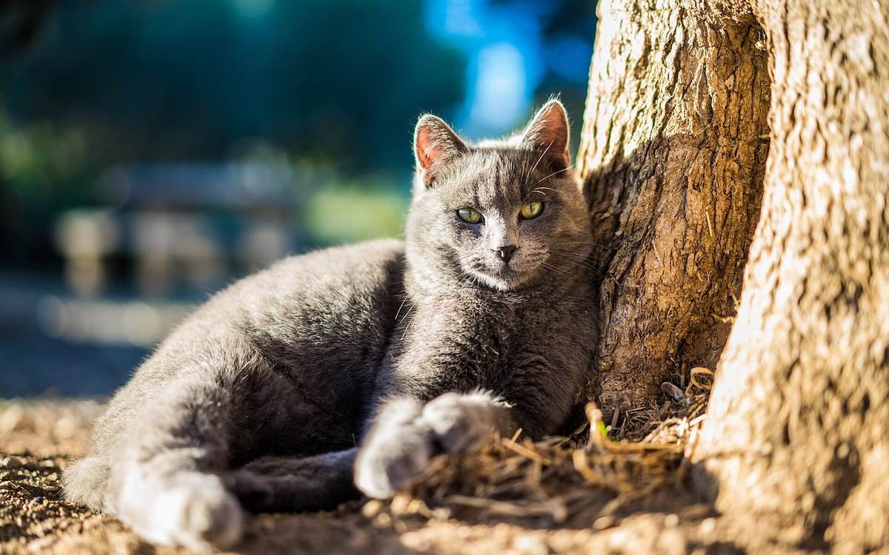

Кошка — территориальное животное. Её карта безопасности — это конкретные запахи, маршруты, укрытия. Переезд стирает эту карту за несколько часов. Даже переезд в лучшую квартиру — для кошки это потеря всего знакомого сразу. Хорошая новость: стресс можно снизить до управляемого уровня, если работать с ним системно — за семь дней до, в день переезда и четырнадцать дней после.
🐾 Дневник здоровья питомца — в кармане
Вес, прививки, симптомы и напоминания в одном приложении. AnimaLife следит за здоровьем питомца вместо вас.
Кошка не воспринимает «новый дом» как улучшение жилищных условий. Для неё новая квартира — это незнакомая территория с чужими запахами, неизвестной планировкой, непредсказуемыми угрозами. Сенсорная система кошки настроена на тонкие запаховые различия: она узнаёт свою территорию по молекулярным меткам, которые нанесла сама (феромоны лицевых желёз, запах лап, запах тела).
В новом пространстве всё это отсутствует. Есть чужие запахи людей, предыдущих жильцов, строительных материалов. Кошка физиологически находится в состоянии «угроза неизвестна, нахожусь на чужой территории» — с соответствующим уровнем кортизола.
По данным исследований ISFM (International Society of Feline Medicine), хронический стресс у кошек — один из триггеров идиопатического цистита (FLUTD), синдрома раздражённого кишечника, дерматитов и иммуносупрессии. Переезд без подготовки — прямой путь к ветеринарным проблемам в первый месяц.
Самая распространённая ошибка: достать переноску из кладовки за час до отъезда. Для кошки переноска — это «контейнер, в который меня сажают перед чем-то неприятным». Цель подготовительного периода — изменить эту ассоциацию.
Чек-лист за 7 дней:
День переезда — максимум стресс-факторов сразу: незнакомые люди (грузчики), громкие звуки, вибрация, нарушение привычного пространства. Задача — минимизировать воздействие.
Это самое важное решение всего переезда: не выпускать кошку сразу во всю квартиру.
Большое незнакомое пространство перегружает. Кошка с большей вероятностью будет прятаться, отказываться от еды, кричать. Правильная стратегия — «базовая комната»: небольшое закрытое пространство, где сосредоточено всё необходимое.
Что должно быть в базовой комнате:
Переноску открыть в базовой комнате и не форсировать — кошка выйдет сама, когда почувствует себя в безопасности. Это может занять от 10 минут до нескольких часов. Не тащить, не вытряхивать.
Первые часы: минимум шума, минимум чужих людей в комнате с кошкой. Если есть дети — объяснить: первый день кошку не беспокоим.
Через 1-2 дня, когда кошка начала есть, пить и пользоваться лотком в базовой комнате — открывают дверь в следующее помещение. Не всю квартиру сразу, а одну комнату за раз.
График расширения зависит от кошки:
Феливей диффузор переносить вместе с расширением зоны или использовать несколько диффузоров одновременно в большой квартире.
Некоторые признаки стресса при адаптации к переезду — это норма, которая пройдёт. Другие — сигнал тревоги.
Нормально в первые 3-7 дней:
Повод для беспокойства (обратитесь к ветеринару):
🐾 Не уверены, что это опасно?
Опишите симптом в AnimaLife — AI-ветеринар за минуту подскажет, что в пределах нормы, а когда пора к врачу.
Активное обследование помещения, трение о мебель и углы, вытягивание на когтеточке — это не деструктивное поведение и не «вредничество». Это нормальная территориальная разметка: кошка оставляет феромоны лицевых желёз и лапных желёз на объектах.
Чем больше кошка трётся о предметы и вытягивается на когтеточке — тем быстрее новая территория начинает «пахнуть своим». Это хороший признак адаптации.
Мочевая маркировка (разбрызгивание небольшого количества мочи на вертикальные поверхности) — тоже часть территориальной разметки у некастрированных и иногда кастрированных кошек при сильном стрессе. Если появилась — это сигнал, что кошка ощущает угрозу своей территории. Реакция: не наказывать, увеличить количество Феливей диффузоров, обеспечить больше укрытий и вертикальных пространств, обсудить с ветеринаром анксиолитики при сохранении более двух недель.
Пожилая кошка. Возрастные кошки адаптируются медленнее, чувствительнее к изменениям. Базовая комната — обязательна, расширять медленно. При когнитивной дисфункции — новое пространство особенно дезориентирует. Обсудите с ветеринаром дополнительную поддержку заранее.
Несколько кошек. Переезд может временно нарушить сложившуюся иерархию. Кошки, которые жили мирно, могут конфликтовать в новом пространстве. Стратегия: первые дни держать кошек в разных комнатах, давая каждой освоить свою зону, и постепенно снова вводить совместное пространство.
Длинная дорога (другой город, самолёт). Если перелёт неизбежен — предварительно обсудить с ветеринаром схему седации. Габапентин (по назначению) — один из вариантов, который хорошо изучен. Не давать валерьянку или пустырник «чтобы успокоить»: у части кошек они дают противоположный возбуждающий эффект.
Переезд — это стресс, который заканчивается. У большинства кошек адаптация занимает от 2 до 6 недель. Терпение, предсказуемость и знакомые запахи — три главных инструмента хозяина.